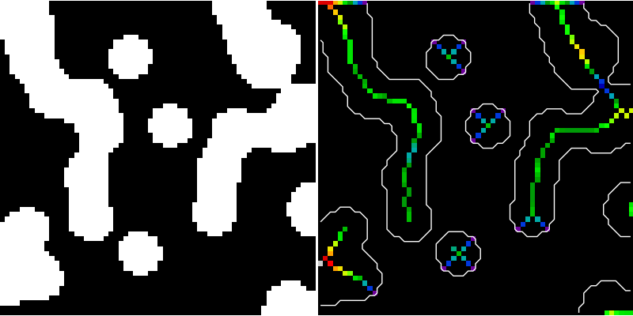

Medial axis skeletonization¶
The medial axis of an object is the set of all points having more than one closest point on the object’s boundary. It is often called the topological skeleton, because it is a 1-pixel wide skeleton of the object, with the same connectivity as the original object.
Here, we use the medial axis transform to compute the width of the foreground objects. As the function medial_axis (skimage.morphology.medial_axis) returns the distance transform in addition to the medial axis (with the keyword argument return_distance=True), it is possible to compute the distance to the background for all points of the medial axis with this function. This gives an estimate of the local width of the objects.
For a skeleton with fewer branches, there exists another skeletonization algorithm in skimage: skimage.morphology.skeletonize, that computes a skeleton by iterative morphological thinnings.
Python source code: plot_medial_transform.py
import numpy as np
from scipy import ndimage
from skimage.morphology import medial_axis
import matplotlib.pyplot as plt
def microstructure(l=256):
"""
Synthetic binary data: binary microstructure with blobs.
Parameters
----------
l: int, optional
linear size of the returned image
"""
n = 5
x, y = np.ogrid[0:l, 0:l]
mask_outer = (x - l/2)**2 + (y - l/2)**2 < (l/2)**2
mask = np.zeros((l, l))
generator = np.random.RandomState(1)
points = l * generator.rand(2, n**2)
mask[(points[0]).astype(np.int), (points[1]).astype(np.int)] = 1
mask = ndimage.gaussian_filter(mask, sigma=l/(4.*n))
return mask > mask.mean()
data = microstructure(l=64)
# Compute the medial axis (skeleton) and the distance transform
skel, distance = medial_axis(data, return_distance=True)
# Distance to the background for pixels of the skeleton
dist_on_skel = distance * skel
plt.figure(figsize=(8, 4))
plt.subplot(121)
plt.imshow(data, cmap=plt.cm.gray, interpolation='nearest')
plt.axis('off')
plt.subplot(122)
plt.imshow(dist_on_skel, cmap=plt.cm.spectral, interpolation='nearest')
plt.contour(data, [0.5], colors='w')
plt.axis('off')
plt.subplots_adjust(hspace=0.01, wspace=0.01, top=1, bottom=0, left=0,
right=1)
plt.show()